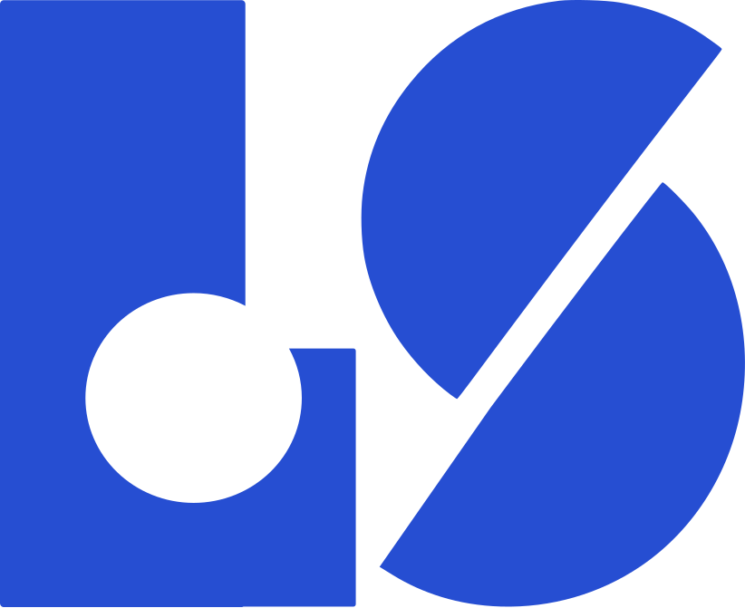

Centralizar
Pedidos, clientes, estoque, financeiro e documentos conectados em uma única operação.

Sistema de GestãoSistema de Gestão
Desenvolvemos sistemas que centralizam informações, organizam processos e dão mais clareza para sua equipe operar com segurança e eficiência.
Conversar sobre o projetoPor que ter um sistema de gestão?
Quando as informações estão espalhadas, a operação perde tempo e a gestão perde visibilidade. Um sistema de gestão reúne os dados importantes em um só lugar e transforma rotina em informação útil.
Pedidos, clientes, estoque, financeiro e documentos conectados em uma única operação.
Processos claros, responsabilidades definidas e menos retrabalho nas tarefas do dia a dia.
Indicadores confiáveis para entender o negócio e agir antes que um problema cresça.
CASO DE USO
Uma plataforma de gestão pode acompanhar toda a jornada da empresa: da entrada de um pedido à emissão fiscal, do controle financeiro à análise dos resultados.
Com módulos integrados e regras adaptadas à operação, sua equipe trabalha com mais segurança e a liderança toma decisões baseada em dados reais.
Uma operação conectada
Para quem serve